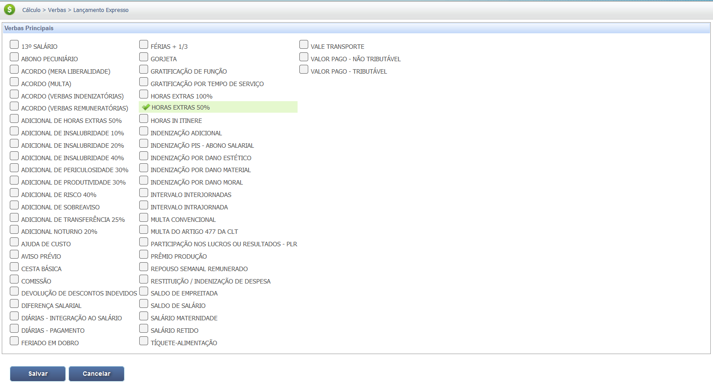
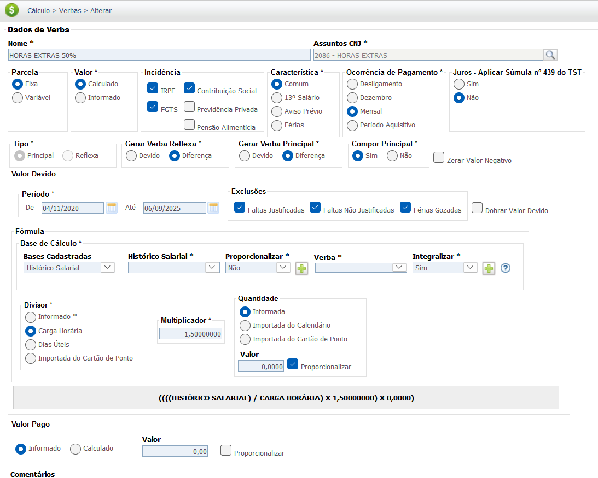
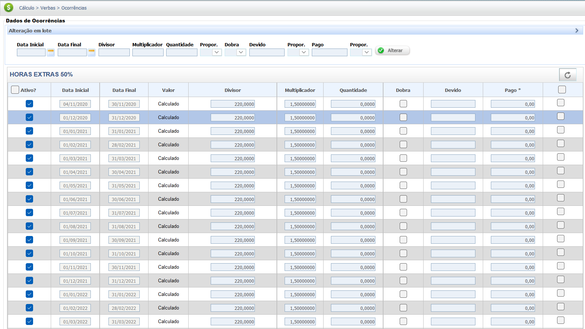

Horas Extras
A hora extra é o período de trabalho que excede a jornada normal do empregado, definida em contrato de trabalho ou por lei. Sua remuneração é superior à da hora normal de trabalho, com um adicional que varia conforme a legislação e acordos coletivos.
O cálculo da hora extra leva em conta o valor da hora normal do empregado, acrescido de um percentual adicional. O percentual mínimo estabelecido pela Constituição Federal é de 50%, mas pode ser maior, a depender de convenção ou acordo coletivo de trabalho.
Base Legal e Jurisprudência
A remuneração das horas extras é fundamentada na Consolidação das Leis do Trabalho (CLT) e na Constituição Federal.
Fontes Normativas
CLT - Consolidação das Leis do Trabalho - Art. 59:
- Artigo 59:
Define o limite de duas horas suplementares, mediante acordo, e o adicional mínimo de 50%.
Constituição Federal de 1988 - Art. 7º, Inciso XVI:
- Inciso XVI:
Estabelece o adicional mínimo de 50% sobre o valor da hora normal para o serviço extraordinário.
Jurisprudência Consolidada
Súmula nº 264 do TST
Tese (Base de Cálculo):
"A remuneração do serviço suplementar é composta do valor da hora normal, integrado por parcelas de natureza salarial e acrescido do adicional previsto em lei, contrato, acordo ou convenção coletiva."
O que isso significa: O cálculo da hora extra deve incluir não apenas o salário base, mas também outras parcelas que têm natureza salarial e são pagas com habitualidade (adicionais, gratificações, etc.). Essa interpretação garante que o cálculo seja feito sobre a remuneração completa do empregado.
Súmula nº 172 do TST
Tese (Reflexo sobre RSR):
"Computam-se no cálculo do repouso remunerado as horas extras habitualmente prestadas."
Base de Cálculo e Deduções
A base de cálculo para a hora extra é o salário mensal do empregado. O valor da hora normal é obtido dividindo-se o salário mensal pelo número de horas da jornada de trabalho. A este valor, aplica-se o percentual de adicional.
Fórmula e Exemplo Prático de Horas Extras:
Um empregado tem um salário mensal de R$ 3.000,00 e uma jornada de 220 horas mensais. Para calcular o valor da sua hora extra, a fórmula é:
Valor da Hora Normal = R$ 3.000,00 / 220 = R$ 13,64
Dessa forma, o valor da sua hora extra (com adicional de 50%) será:
Valor da Hora Extra = (R$ 13,64 + 50%) = R$ 20,46
Um segundo exemplo: um empregado com salário de R$ 3.000,00 e jornada de 220 horas mensais trabalhou 10 horas extras em um mês. O valor da sua hora extra é R$ 20,46. O cálculo total pode ser visualizado na tabela abaixo:
| Item | Valor |
|---|---|
| Salário Mensal | R$ 3.000,00 |
| Jornada Mensal | 220 horas |
| Horas Extras | 10 horas |
| Valor da Hora Extra | R$ 20,46 |
| Total a Pagar (Bruto) | R$ 204,60 |
Deduções Incidentes
Sobre o valor total das horas extras, incidem as deduções legais, sendo as principais a contribuição para o INSS (Instituto Nacional do Seguro Social) e o Imposto de Renda (IRPF). Essas deduções são calculadas sobre o valor bruto das horas extras, somado ao salário normal e a outras verbas salariais.
Exemplo Prático de Deduções:
Considerando um valor total de R$ 204,60 em horas extras (bruto), as deduções são aplicadas da seguinte forma (valores fictícios para o exemplo):
- Dedução do INSS: Se a alíquota de INSS for de 8%, a dedução será de R$ 16,37.
- Dedução do IRPF: A base de cálculo do IRPF é o valor total das horas extras menos o INSS. Ex: R$ 204,60 - R$ 16,37 = R$ 188,23. Se a alíquota do IRPF for de 7.5%, a dedução será de R$ 14,12.
O valor líquido a ser recebido pelo empregado, neste caso, seria de R$ 174,11 (R$ 204,60 - R$ 16,37 - R$ 14,12).
Verbas Reflexas
A remuneração de **horas extras**, quando paga com habitualidade, possui **natureza salarial** (Súmula 264 do TST), integrando o salário para todos os efeitos legais e gerando reflexos nas verbas abaixo. É crucial notar que as horas extras habituais também refletem no **Repouso Semanal Remunerado (RSR) e Feriados** (OJ 394 da SDI-1 do TST).
O cálculo dos reflexos é feito pela integração do valor médio das horas extras ao salário-base, resultando na **remuneração completa** que serve como base de cálculo das verbas.
| Verba Trabalhista | Reflexo das Horas Extras |
|---|---|
| Repouso Semanal Remunerado (RSR) e Feriados | O valor das horas extras habituais deve ser integrado ao cálculo do RSR e dos Feriados. O reflexo deve ser calculado sobre as horas extras e pago de forma destacada (reflexo sobre a própria remuneração mensal). **OJ 394 da SDI-1 do TST.** |
| 13º Salário | Integra a base de cálculo do 13º Salário (integral e proporcional), computando-se a média das horas extras pagas no período. |
| Férias + 1/3 | Integra a base de cálculo das Férias (vencidas e proporcionais) e o adicional constitucional de 1/3, computando-se a média das horas extras pagas no período. |
| Aviso Prévio | Integra a base de remuneração para cálculo do Aviso Prévio (trabalhado ou indenizado), computando-se a média das horas extras pagas no período. |
| FGTS (Depósito Mensal e Multa) | Incide sobre o valor das horas extras (e seus reflexos em RSR/Feriados), compondo a base de cálculo para o depósito mensal de 8% e para a Multa de 40%. |
Atenção: A Súmula 172 do TST estabelece que o Repouso Semanal Remunerado (DSR) calculado sobre as horas extras integra o cálculo das férias, 13º salário, aviso prévio e FGTS. Essa regra visa evitar o chamado **"bis in idem"** (cálculo em duplicidade).
Calculadora (Simulação)
Utilize esta ferramenta para calcular o valor de suas horas de trabalho.
Cálculo Simples
Informe os dados para calcular o valor bruto das horas extras.
Lançamento no PJe-Calc
A seguir, confira o passo a passo para o lançamento da verba no PJe-Calc, utilizando a opção "Expresso":
-
Acessar Verbas e Escolher Lançamento: No menu de
navegação à esquerda, clique na opção Verbas para iniciar o lançamento. Após o
comando,
será exibida a tela para escolha do Lançamento da Verba. Escolha a opção Expresso.

- Seleção da Verba: O sistema abrirá as opções de verbas, escolha a verba Horas Extras % e clique no botão Salvar 
-
Quadro de Verbas e Ações: O sistema exibirá um quadro
com os campos:
- Ações - contendo as opções de configurações da verba selecionada (parâmetros,
ocorrências e
exclusão)

-
- Parâmetros da Verba

-
- Ocorrências da Verba

-
- Excluir

- Verba Principal - verba selecionada para lançamento.
- Verba Reflexa - em que ao clicar no botão Exibir serão listadas todas as verbas reflexas ligadas a Verba Principal.
- Parametrização da Verba: Ao clicar no botão Parâmetros da Verba serão exibidas todas as configurações necessárias para a parametrização da Verba Principal. 
- Registro de Ocorrências: Ao clicar no botão Ocorrências da Verba serão exibidas todas as configurações necessárias para registro das ocorrências da Verba Principal. 